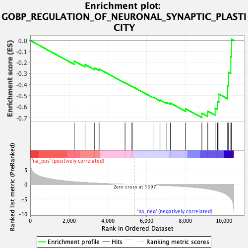
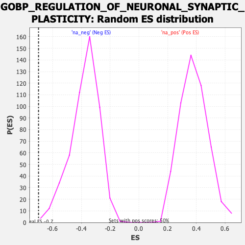

| Dataset | qlf.KOd4vsWTd4_gsea_score |
| Phenotype | NoPhenotypeAvailable |
| Upregulated in class | na_neg |
| GeneSet | GOBP_REGULATION_OF_NEURONAL_SYNAPTIC_PLASTICITY |
| Enrichment Score (ES) | -0.69825083 |
| Normalized Enrichment Score (NES) | -1.8477802 |
| Nominal p-value | 0.002004008 |
| FDR q-value | 0.030818576 |
| FWER p-Value | 0.761 |

| SYMBOL | RANK IN GENE LIST | RANK METRIC SCORE | RUNNING ES | CORE ENRICHMENT | |
|---|---|---|---|---|---|
| 1 | HRAS | 2268 | 0.913 | -0.1865 | No |
| 2 | NF1 | 2828 | 0.658 | -0.2183 | No |
| 3 | NPTN | 3325 | 0.483 | -0.2499 | No |
| 4 | NCDN | 3555 | 0.412 | -0.2583 | No |
| 5 | CLN3 | 4893 | 0.089 | -0.3829 | No |
| 6 | DLG4 | 5247 | 0.028 | -0.4156 | No |
| 7 | RAB5A | 5263 | 0.026 | -0.4162 | No |
| 8 | KRAS | 6337 | -0.162 | -0.5132 | No |
| 9 | RAB3GAP1 | 6696 | -0.249 | -0.5393 | No |
| 10 | ZDHHC2 | 7050 | -0.342 | -0.5618 | No |
| 11 | APP | 7231 | -0.392 | -0.5662 | No |
| 12 | APOE | 8021 | -0.702 | -0.6185 | No |
| 13 | RAB8A | 8858 | -1.207 | -0.6589 | Yes |
| 14 | SYAP1 | 9162 | -1.471 | -0.6399 | Yes |
| 15 | CAMK2B | 9541 | -1.947 | -0.6125 | Yes |
| 16 | ARC | 9667 | -2.162 | -0.5540 | Yes |
| 17 | RAB3A | 9736 | -2.297 | -0.4856 | Yes |
| 18 | KIT | 10186 | -3.625 | -0.4103 | Yes |
| 19 | SYP | 10235 | -3.894 | -0.2880 | Yes |
| 20 | NSMF | 10351 | -4.648 | -0.1476 | Yes |
| 21 | EGR2 | 10383 | -4.986 | 0.0119 | Yes |
